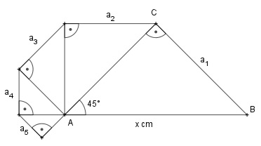

Aufgabe 124 a) Ein Unternehmen will seine Produktion in 7 Jahren um 85% steigern. Wie hoch ist seine Gesamtproduktion bei gleichbleibender Steigerung in 7 Jahren, wenn es im ersten Jahr mit 4 500 Stück beginnt? b) Wie lang ist der Streckenzug von a1 bis an mit x = 10 cm?

a) Anfangsproduktion 4 500 Stück Produktion nach 7 Jahren = 4 500 * 1,85 = 8 325 Stück Nach 1 Jahr 4 500 * q Stück Nach 2 Jahren 4 500 * q2 Stück . . Nach 7 Jahren 4 500 * q7 Stück 8 325 = 4 500 * q7 |:4500 q7 = 1,85 | q = 1,0919 --> Steigerung um 9,19% pro Jahr a1 = 4 500 * 1,0919 1 - 1,09197 s7 = 4 500 * 1,0919 * -------------- 1 - 1,0919 s7 = 45 471 Stück b) Die Dreiecke sind rechtwinklig und gleichschenklig. Satz von Pythagoras im Dreieck ABC: 102 = a12 + a12 = 2 * a12 |:2 100 a12 = ----- |√ 2 10 a1 = ---- √2 1 q = ---- √2 Im nächsten Dreieck gilt: a12 = 2 * a22 102 ----- = 2 * a22 |:2 2 102 a22 = ----- |√ 4 10 10 a2 = ----- = ------- 2 (√2)2 Es ist eine unendliche geometrische Reihe: 10 ---- √2 10 s∞ = --------- = --------- = 24,14 cm 1 √2 - 1 1 - ---- √2